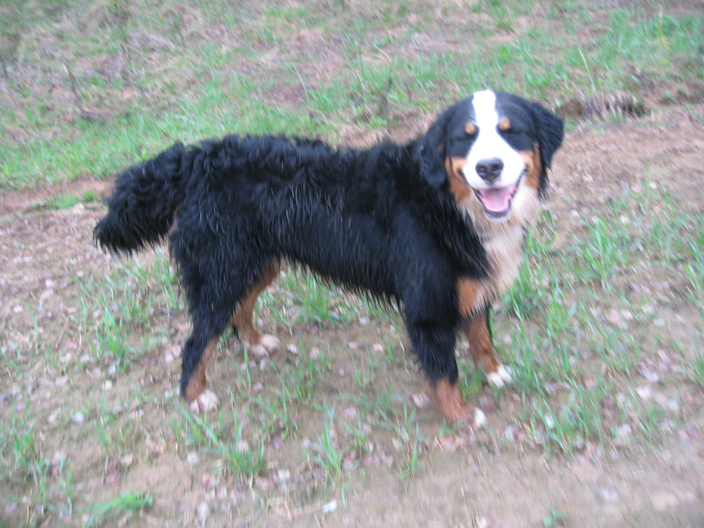

Знакомство с породой и главным действующим лицом сайта
О моей собаке
Настоящая страничка познакомит вас с Бернским зенненхундом, который живет с нами столько лет. Его зовут Батя , ему целых 10 лет!
Подробнее об этой породе можно почитать здесь
В общем, все нормальные собаки выглядят так:

Наша же собака немного отличается от нормальных:
Очень много веселого и интересного текста, с интригующими завязками, кульминациями и развязками